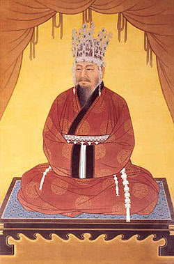
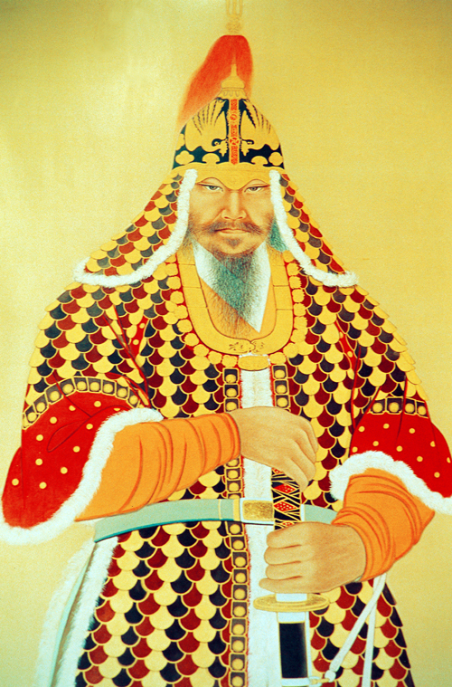

한국의 장군들
이순신
한국사에서 독보적으로 유명한 군인이자 성웅[7]이란 칭호가 따로 붙을 정도로 가장 드높은 영웅이며, 무장 이외에 역사적 인물 전체로 넓혀도 세종대왕과 함께 한국에서 가장 유명한 인물이다. 고구려의 을지문덕, 고려의 강감찬과 함께 시대를 대표하는 구국영웅이자 한국사 3대 명장으로 손꼽히며,[8] 인간으로서도 희대의 걸물이요, 파란만장한 삶을 산 사내이다. 그는 임진왜란 시기 조선 수군을 이끌고 해상에서 연전연승을 거듭하며 일본군의 보급로를 차단하여 북상을 저지하였는데, 전쟁 내내 적과 싸워 모든 전투에서 최소한의 희생으로 항상 승전을 거두었지만, 당시 임금인 선조[9]와 조정에게 지원은 커녕 불합리한 모함과 추궁만 당하였다. 끝까지 임금에게 닿지 않을 충심과 함께 온 힘을 다했으나, 임진왜란의 마지막 전투인 노량 해전에서 장렬한 죽음을 맞이했다.
사후 조정은 관직을 추증했고, 선비들은 찬양시(詩)를 지었으며, 백성들은 추모비를 세우는 등, 지속적으로 많은 추앙을 받아왔다. 일제강점기를 거쳐 현대에 와서도 마찬가지로 대한민국 국민이 가장 존경하는 위인으로 꼽힌다. 이순신은 현대 한국에서 성웅, 명장, 군신이라는 최고급 수사들이 이름 앞에 붙어도 어떤 이의도 제기받지 않는, 세종대왕과 함께 한국인에게 가장 사랑받는 한국사 양대 위인이다. 가장 존경하는 위인을 묻는 설문조사에서도 세종대왕과 1, 2위를 다투며,[10] 한국에서 전무후무한 성웅이라는 호칭은 오직 이순신에게만 사용되고 있다. 충무공이라는 시호도 실제로는 김시민과 같은 여러 장수들이 받은 칭호지만, 현대 한국인들에게는 이순신 전용 시호로 인식된다.
사실 이순신이 이토록 위대한 평가를 받는 이유는 그의 군사적인 위업을 떠나서 보통 사람으로서 감히 범접하기 어려운 성인(聖人)이었다는 점이다. 그는 인류가 저지를 수 있는 가장 잔혹하고 거대한 형태의 폭력인 전쟁이라는 상황을 수행하며 어마어마한 스트레스를 감당하였다. 전쟁을 치르는 동안 여러 사람들의 질시와 모함을 받아 파면당하고, 관리로서 받은 조정의 비합리적인 처우 등 앞으로는 왜적과 싸우며 뒤로는 조정과 임금이라는 내부의 적과 맞서 홀로 버텼다. 또한, 어머니와 아들까지 연이어 전시에 잃고 설상가상 자신이 모든 걸 쏟아부어 육성한 정예군이 거의 궤멸수준으로 타격을 입은 상황에서 다시 일어나, 오랜 전쟁으로 단련된 수 십배의 적군에 맞서 출전이 곧 죽음이 확실시되는 절망적인 상황에 굴복하지 않고 싸워 결국 이겼으며, 천재적인 능력과 노력을 발휘하여 임진왜란 당시 존망의 위기에 빠진 조국과 백성을 끝끝내 지켜냈다. 이순신은 이처럼 자신이 처한 참담한 상황에서 인간으로서 지닐 수 있는 이상과 펼칠 수 있는 능력의 극한을 보여준 위대한 인물이었다.
그는 웃음이 적고 행동이 단아했으며, 좌절과 포기를 모른 채 제 사명에만 충실하게 전장에서 싸우기를 멈추지 않았다. 탐관오리들이 자신의 위신을 높이고자 높으신 분들과 뇌물을 주고받는 등의 부정행위를 하지 않고 무관의 본분에 충실하였다. 하지만 이러한 원리원칙적인 성향과 굉장히 청렴한 성격 탓에 당시 상사들과 갈등이 많아 전쟁(임진왜란) 전에는 인사이동이 자주 있어 여러 지역을 옮겨 다녔다. 이순신은 사람이 갈망하는 권위, 권력 같은 원초적인 욕망에 휘둘리지 않고 오직 자신의 신념으로 매사에 임하는 사람이었다. 그는 전장에서 싸우다 죽던 순간까지 그 누구의 인정과 보상도 바라지 않고 오직 나라와 백성을 구하고자 헌신하였으며, 몇몇 전투는 너무나 비현실적인 공적을 세워 어떻게 이걸 이뤄낸 건지 아직도 학설이 분분할 정도이다.[11] 가령 명량 해전의 초반부에서 물살이 바뀌기 전까지 약 두 시간 가량, 이순신은 대장선 한 척으로 일본 측 함선 133척과 정면으로 붙어 하나하나 박살내고 있었다. 분명히 조선 측과 일본 측의 풍부한 사료로 교차검증이 가능한 기록임에도 너무 믿어지지 않아서, 사람들이 오히려 왜곡된 유사역사학자의 주장을 믿고마는 것이다. 이런 사람이 임진왜란과 같은 전란기에 때맞춰 등장하여 경이로운 활약상을 남긴 것도 기적에 가까운 일이라 하겠다. 만약 이순신 같은 인물이 나타나지 않았다면 조선은 일본에게 순식간에 먹혔을 것이고, 이후 명과 일본의 땅 따먹기 전면전으로 조선은 말 그대로 가루가 됐을 것이다.
도저히 말이 안 되는 전투 수행 능력이 익히 알려져 있지만, 기록을 보면 전략적인 식견이 압도적으로 뛰어난 것으로 추측해볼 수 있다. 이순신의 지휘를 받는 조선 수군의 총 전력은 왜군보다 열세였지만 대부분의 전투를 수적 우위를 점한 채로 압승을 거두며, 심할 때는 이러한 각개격파가 하루동안 대여섯번이 일어나 그 전투들만으로 출정한 조선수군의 전력을 넘어서는 적군을 수장해버리는 일도 있었다. 이순신 휘하의 조선 수군이 적보다 열세인 상황에서 전투를 벌인 때는 전력의 열세를 극복할만한 완벽한 함정을 팠거나, 본인의 의사와 상관 없이 정치적 이유로 출정해야 했거나, 그 이상 전투를 피하면 나라가 망하는 때 뿐이었다.
또한 함대 설계 및 훈련, 운영에도 탁월한 능력을 보였다. 전국이 전쟁의 화마로 털리는 바람에 교지를 쓰거나 기록을 남길 종이마저 부족했던 중앙 정부에게 종이를 바치기도 했다. 남해안 여러 섬에 둔전(屯田)을 만들어 식량을 자급자족했으며, 어로 활동으로 군량과 군비를 충당하기도 했다. 당시 기피대상이던 수군의 병력 유지를 위해 직접 발벗고 뛰어다닌 결과 10,000명 이상의 병력을 중앙 정부의 지원 없이 유지했다. 이순신이 중앙 정부에 무언가를 요구했던 것은, 역병으로 병사들이 죽어나갈 때 의원을 보내달라는 것 한 번 뿐이었다. 원균이 5천 명의 병력을 지원받고도 칠천량 해전에서 대패한 것과는 너무나 대조적이다. 자기 휘하로 피난온 백성들을 잘 보살피고 다스려 칭송을 받으며 목민관으로서도 훌륭한 면모를 보였다. 다방면으로 뛰어난 업적과 충성심 덕에 적국이었던 일본조차 사후 연구와 숭배 대상으로 삼기도 하였다.
김유신
신라 상대~중대의 무장. 진평왕부터 문무왕까지 80년에 가까운 기간 동안 살며 5명의 신라 왕을 섬겼다. 옛 금관국 구형왕 김구해의 직계 후손이며 골품은 진골이었다.
성골 왕통의 단절로 인한 극도의 정정 불안정 속에서 약화된 신라군을 이끌고 재앙에 가까웠던 백제의 대침공을 막고 수차례 계속된 서라벌 귀족들의 반란을 진압하여 망국의 단계에 돌입한 신라를 보전하였으며 거기에 더하여 삼한일통의 대업을 이룬 대영웅으로, 한국사에서 왕통 직계는 커녕 왕족조차 아님에도 사후 당대에 대왕으로 추존된 유일한 인물이기도 하다. [6]
김유신이 활동한 시기의 신라는 진흥왕의 전성기가 끝나고 반복되는 실정과 외교적 고립, 신라 내부의 반대 세력으로 국가적 위기에 처해 있었는데 그런 신라를 존속시킨[7] 핵심 인물로 넓게 보면 향후 수천년 한국사에 큰 영향을 끼친 인물 중 한 명. 또한 장수의 이미지가 강해서 묻히기는 하지만 정치가로서의 영향력도 결코 적지 않았던 인물이다.
강감찬

고려시대의 명신. 여요전쟁 당시 거란의 대군을 몰살해버린 귀주 대첩을 주도한 문신(文臣)으로, 동아시아 역사 전체에 영향을 미친 구국영웅이자 정치적으로도 고려사 리즈시절을 이끈 현종의 치세에 큰 도움을 준 명재상이였다. 또한 고구려의 을지문덕, 조선의 이순신과 더불어 한국사 3대 명장으로 평가받는다. 이 셋은 모두 500여년 정도의 시차를 두고 떨어져 있다. 또한 서희, 현종과 더불어 고려시대를 대표하는 위인으로도 거론되고 세종대왕, 이순신과 더불어 서울이 낳은 위인이기도 하다.[1]
현대 한국인들에게는 주로 거란을 물리친 '장군'으로 알려져 무신으로 오해받지만 문과에 장원급제하고 나중에 문하시중에 오른 문관이다. 강감찬은 정식 무관직에 봉해진 적이 없고 여요전쟁 때 받은 상원수 직은 임시 군단의 지휘관이라 비상설직이므로 품계가 있는 공식 무관직이 아니다.[2][3]
생전 받은 작위는 남작에서 진작된 후작(侯爵)이다. 분봉된 봉지는 천수현(天水縣). 아마 한국사에서 가장 유명한 후작일 듯.
진주 강씨 중 인헌공파의 파조이기도 하다.[4] 오늘날의 서울특별시 관악구[5]에서 출생한 관계로, 인헌공파는 '금천[6] 강씨'로 따로 분류하는 경우도 있다.
젊은 시절의 이름은 강은천(姜殷川). 강감찬이란 이름은 개명한 이름[7]으로 언제 개명했는지는 분명하지 않다.
을지문덕
고구려 영양왕 대에 활약했던 전쟁 영웅으로 고구려-수 전쟁 당시에 고구려를 침략해온 수양제로부터 고구려를 지켜낸 불세출의 명장으로 유명하다.
당시 수나라는 최강대국이었는데,[4] 이런 수나라가 1차엔 30만 명, 2차 침공 당시에는 전투병만 113만 명, 보급 및 기타 병과를 포함하면 300만 명 가까이 되는, 세계 전쟁사에 유례가 없는 초대규모의 병력을 동원해[5] 고구려를 침략했다.[6][7] 한마디로 이것은 수와 고구려 두 나라의 존망이 걸린 문명대전이었는데, 을지문덕은 이런 거대한 회전(會戰, pitched battle)에서 대승을 거둬 고구려는 물론 그 남쪽의 한반도 국가들을 벼랑 끝에서 구하는 전쟁 영웅이 된다. 그 후 오랜 전란을 끝내고 통일한 거대한 수제국은 서서히 역사 저편으로 사라진다.
권 율
1537년 조선 경기도 강화부(현재의 인천광역시 강화군)에서 태어났다. 6대조가 여말 선초의 유학자이며 조선의 개국공신인 권근이고, 아버지는 영의정을 지냈던 권철로, 따라서 뼈대 있는 집안 출신이다. 권철의 넷째 아들로 막내. 소싯적 일화를 보면 왠지 대인배의 풍모가 느껴지는 에피소드가 많은데, 6세 때 한번은 어머니가 하얀 비단 옷을 새로 지어주며 입으라고 하자 입기 싫다고 했다. 그 이유를 묻자 "의복은 몸만 가리면 그만이지 뭐하러 남의 시선을 생각합니까?"라고 대답했는데 아버지 권철은 이 얘기를 듣고 비범한 인물이 될거라고 생각했다고 한다.[4]
가문도 좋고 나름대로 똑똑했던 것 같지만 특이하게도 40세가 되도록 관직을 얻으려는 생각을 하지 않았다. 친구들이 권율에게 "과거를 보든지 집안 이름을 써서 관직이라도 얻든지 언제까지 그렇게 살텐가?"라고 묻자 권율 왈, "옛날 태공망은 나이 80에 현달해도 오히려 천하를 경영하여 백성을 구제했는데, 아직 내 나이가 태공망의 반밖에 안되는데다 능력까지 미치지 못하는데 어찌 출세가 늦을 걸 걱정하겠냐?"며 반박했다고 한다. 벼슬에 연연하지 않는 대인배의 풍모가 느껴지는 부분. 다른 선비들처럼 방에 틀어박혀서 글 공부만 한 것도 아니고, 지인들과 어울려 전국을 여행하거나 지리를 연구하는 등 한량처럼 지냈다고.
벼슬길에 뜻을 두게 된 이유는 아버지 권철 때문이라고 전해진다. 아버지 권철은 죽기 직전에 막내 아들 권율을 빤히 쳐다보다가 "널 내가 낳았구나" 라는 말을 남기고 숨을 거두었는데, 이 말에 크게 깨달은 바가 있어 아버지의 상을 치르고 금강산에 들어가 과거 급제 공부를 시작했다고 한다. 이렇게 벼슬길에 늦게 올라 1582년에 식년 문과에 병과[5]로 급제하여 승문원정자가 되니 이 때 나이가 46세였다.[6] 그 후 전라도 도사, 예조 정랑, 호조 정랑, 경성 판관 등을 거쳤다.